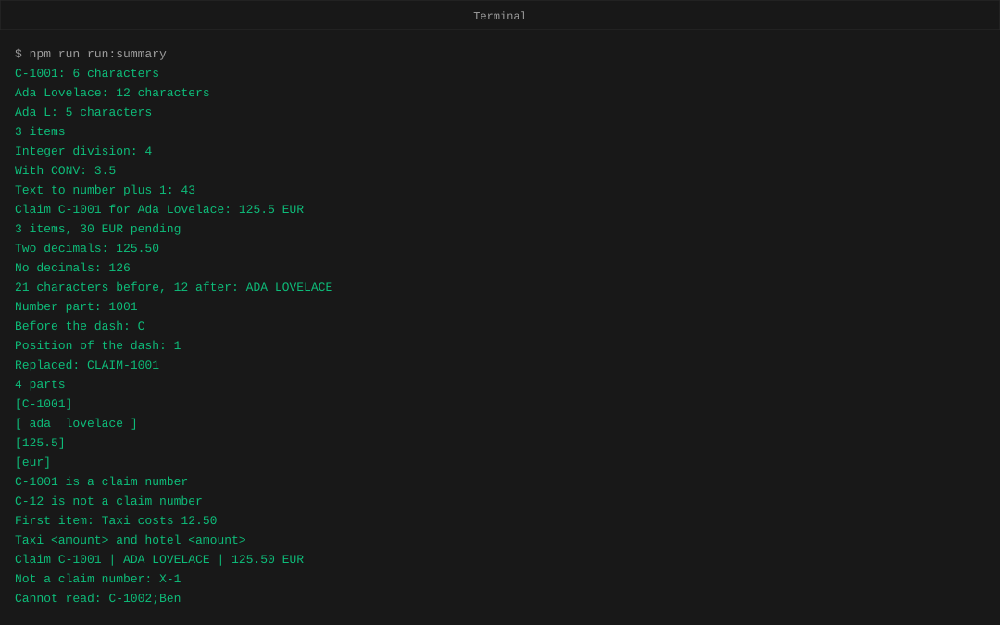
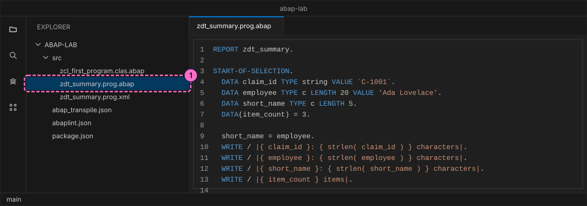
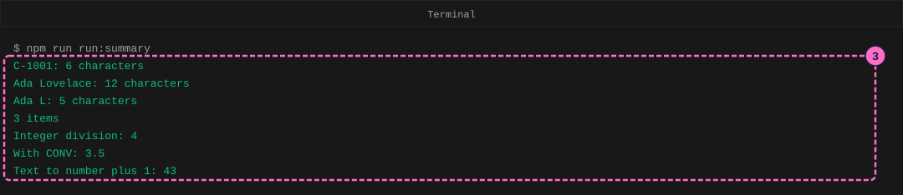
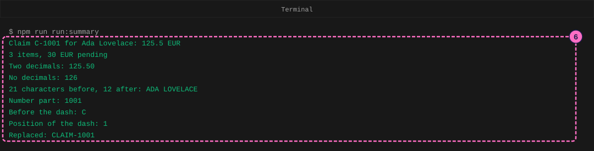
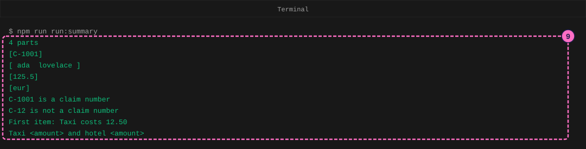
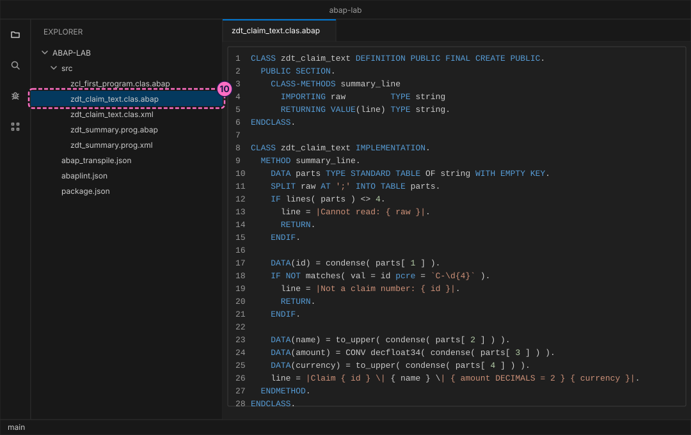
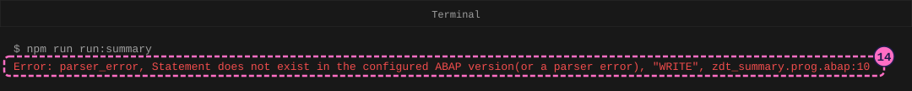

ABAP Guide: Data Types, Strings and String Templates
|
This content was generated with the assistance of AI and should be verified against the official documentation before being relied on in production. |
Checked on 2026-11-13 against open-abap 2.14.30 (the abaplint transpiler and runtime), open-abap-core a9acc41, abaplint 2.120.103 and Node.js 24.21.
What you build
You work with one expense claim in text form. Along the way you declare variables of different types, convert values from one type to another, build sentences with string templates, clean and cut text with string functions, split a semicolon-separated record into parts and test the claim number with a regular expression (a pattern for text). At the end a small class, zdt_claim_text, turns the raw record C-1001; ada lovelace ;125.5;eur into the summary line Claim C-1001 | ADA LOVELACE | 125.50 EUR, and a report named zdt_summary prints it.
The claim number, the name and the amounts are made-up example values. The playground is open-abap, a community open-source project, not SAP software. It runs only the part of the ABAP language that it implements, so check a program on a real SAP system before you rely on it there. Output is written with WRITE, the classic list statement, because that is what the playground offers.

Before you start
-
No account is needed: Node.js, the abaplint tools and open-abap install from the public npm registry without signing in. The licences you accept by installing (MIT for the abaplint packages) are listed in the README of the ABAP lab.
-
Set up the lab first, with the guide Set Up a Local ABAP Playground, and work through Your First ABAP Program: you need the folder
abap-labwithnpm installdone, the habit of one.abapfile plus one.xmlfile per object, and an editor such as Visual Studio Code open on it. -
The lab already holds the finished files of this guide in
modules/ROOT/examples/abap-lab/src/. Type them yourself rather than copying them, so that you meet the errors in this guide on your own screen. -
Read Data Types and Data Objects for the types used here, Strings, String Templates and Regular Expressions for the text tools, and Expressions, Operators and Assignments for how a value changes type when it is stored or calculated.
-
The figures are drawings of the editor and the terminal, not screenshots. A highlighted box with a number marks the file or the output of the step with the same number. A figure of a run shows only the lines that the phase added, and no figure shows the lines the transpiler prints about its file counts.
Steps
The report zdt_summary grows from phase to phase. Every phase adds a block of lines at the end of the report and ends with a run, so the output of each run contains the lines of all earlier phases too. All names that start with zdt_ belong to this guide.
Declare data and convert values
-
Create the report
src/zdt_summary.prog.abapwith the lines below, and its attribute filesrc/zdt_summary.prog.xmlnext to it. A variable is declared withDATA, a name and a type. The typestringholds a text of any length and keeps every character, including blanks at the end. The typec LENGTH 20is a text field of exactly twenty characters: a shorter value is filled up with blanks, and a longer value is cut off, asshort_nameshows, which has room for five characters only. The statementDATA(item_count) = 3.is an inline declaration: ABAP works out the type from the value, here an integer. EachWRITEline prints a template (the text between vertical bars, with values in{ }) andstrlencounts the characters.REPORT zdt_summary. START-OF-SELECTION. DATA claim_id TYPE string VALUE `C-1001`. DATA employee TYPE c LENGTH 20 VALUE 'Ada Lovelace'. DATA short_name TYPE c LENGTH 5. DATA(item_count) = 3. short_name = employee. WRITE / |{ claim_id }: { strlen( claim_id ) } characters|. WRITE / |{ employee }: { strlen( employee ) } characters|. WRITE / |{ short_name }: { strlen( short_name ) } characters|. WRITE / |{ item_count } items|.<?xml version="1.0" encoding="utf-8"?> <abapGit version="v1.0.0" serializer="LCL_OBJECT_PROG" serializer_version="v1.0.0"> <asx:abap xmlns:asx="http://www.sap.com/abapxml" version="1.0"> <asx:values> <PROGDIR> <NAME>ZDT_SUMMARY</NAME> <SUBC>1</SUBC> <RLOAD>E</RLOAD> <UCCHECK>X</UCCHECK> </PROGDIR> </asx:values> </asx:abap> </abapGit>Source: Elementary Data Types (ABAP Keyword Documentation) and DATA, Inline Declaration (ABAP Keyword Documentation)

-
Add these lines after the last
WRITEline of the report. They convert values.7 / 2calculates with whole numbers, so the result is rounded to 4.CONV decfloat34( 7 )first turns the 7 into a decimal floating-point number, so the division keeps its decimals.CONV i( '42' )turns the text42into the integer 42, which can then be added to.DATA(share) = 7 / 2. DATA(exact_share) = CONV decfloat34( 7 ) / 2. DATA(units) = CONV i( '42' ) + 1. WRITE / |Integer division: { share }|. WRITE / |With CONV: { exact_share }|. WRITE / |Text to number plus 1: { units }|. -
In the terminal, in the
abap-labfolder, run the script that transpiles and runs the report:npm run run:summaryThe first four lines are the declarations:
C-1001has 6 characters,Ada Lovelacehas 12 (the blanks that fill the field are not counted),Ada Lis what fitted into five characters, and3 items. The next three are the conversions: 4 for the integer division, 3.5 withCONV, and 43 for the text turned into a number.
Build and clean text
-
Add the templates. A template can hold a variable, a calculation (
{ item_count * 10 }) or a function call between the braces. Write a space after the opening brace and before the closing brace. The optionDECIMALSafter a value sets the number of decimal places: with 2 the amount shows as 125.50, and with 0 it is rounded to 126.DATA(currency) = `EUR`. DATA(amount) = CONV decfloat34( '125.5' ). DATA(line) = |Claim { claim_id } for { employee }: { amount } { currency }|. WRITE / line. WRITE / |{ item_count } items, { item_count * 10 } { currency } pending|. WRITE / |Two decimals: { amount DECIMALS = 2 }|. WRITE / |No decimals: { amount DECIMALS = 0 }|. -
Add the string functions. A string function takes a text and returns a new one, and leaves its input as it was.
condenseremoves the blanks at both ends and shortens each run of blanks inside to one, andto_uppermakes capitals, so the 21-character name becomesADA LOVELACEwith 12.substringtakes four characters after skipping two.substring_beforecuts before the first dash.findreturns the position of the first dash, where the first character is at position 0.replaceswaps a piece of text for another.DATA(raw_name) = ` ada lovelace `. DATA(clean_name) = to_upper( condense( raw_name ) ). WRITE / |{ strlen( raw_name ) } characters before, { strlen( clean_name ) } after: { clean_name }|. WRITE / |Number part: { substring( val = claim_id off = 2 len = 4 ) }|. WRITE / |Before the dash: { substring_before( val = claim_id sub = `-` ) }|. WRITE / |Position of the dash: { find( val = claim_id sub = `-` ) }|. WRITE / |Replaced: { replace( val = claim_id sub = `C-` with = `CLAIM-` ) }|. -
Run
npm run run:summaryagain. The nine new lines follow the seven lines of the first run.
Split a record and check it
-
Add a raw record, as it might arrive from a file, and cut it at the semicolons.
SPLIT ... INTO TABLEputs every piece in one row of an internal table (a list of values, here of texts).lines( parts )counts the rows, and theLOOPprints each row in square brackets, so you see that the blanks around the name are still there: splitting does not clean.DATA(raw_line) = `C-1001; ada lovelace ;125.5;eur`. DATA parts TYPE STANDARD TABLE OF string WITH EMPTY KEY. SPLIT raw_line AT ';' INTO TABLE parts. WRITE / |{ lines( parts ) } parts|. LOOP AT parts INTO DATA(part). WRITE / |[{ part }]|. ENDLOOP. -
Add the pattern checks. The pattern
C-\d{4}reads: the letter C, a dash, then exactly four digits (\dis one digit).matchesis true only when the whole text fits the pattern, soC-1001fits andC-12does not. InFIND PCRE, the parts of the pattern in parentheses are remembered and handed back withSUBMATCHES: here the first word and the amount behind it.replacewith a pattern andocc = 0replaces every match. Inside backquotes the backslashes stay as they are.IF matches( val = claim_id pcre = `C-\d{4}` ). WRITE / |{ claim_id } is a claim number|. ENDIF. IF NOT matches( val = `C-12` pcre = `C-\d{4}` ). WRITE / |C-12 is not a claim number|. ENDIF. DATA(note) = `Taxi 12.50 and hotel 80.00`. FIND PCRE `(\w+)\s+(\d+\.\d\d)` IN note SUBMATCHES DATA(item) DATA(price). WRITE / |First item: { item } costs { price }|. WRITE / replace( val = note pcre = `\d+\.\d\d` with = `<amount>` occ = 0 ). -
Run
npm run run:summary. Nine more lines appear.
Put the steps in a class
-
Move what you learned into a class, so that any program can reuse it. Create
src/zdt_claim_text.clas.abapand its attribute filesrc/zdt_claim_text.clas.xml. The methodsummary_linetakes a raw record and returns one line. It splits the record, gives up with a message when there are not four parts or when the claim number does not fit the pattern (RETURNleaves the method), and otherwise cleans each part, converts the amount withCONVand builds the result with a template. A bar inside a template is written\|, andparts[ 1 ]reads the first row of the table.CLASS zdt_claim_text DEFINITION PUBLIC FINAL CREATE PUBLIC. PUBLIC SECTION. CLASS-METHODS summary_line IMPORTING raw TYPE string RETURNING VALUE(line) TYPE string. ENDCLASS. CLASS zdt_claim_text IMPLEMENTATION. METHOD summary_line. DATA parts TYPE STANDARD TABLE OF string WITH EMPTY KEY. SPLIT raw AT ';' INTO TABLE parts. IF lines( parts ) <> 4. line = |Cannot read: { raw }|. RETURN. ENDIF. DATA(id) = condense( parts[ 1 ] ). IF NOT matches( val = id pcre = `C-\d{4}` ). line = |Not a claim number: { id }|. RETURN. ENDIF. DATA(name) = to_upper( condense( parts[ 2 ] ) ). DATA(amount) = CONV decfloat34( condense( parts[ 3 ] ) ). DATA(currency) = to_upper( condense( parts[ 4 ] ) ). line = |Claim { id } \| { name } \| { amount DECIMALS = 2 } { currency }|. ENDMETHOD. ENDCLASS.<?xml version="1.0" encoding="utf-8"?> <abapGit version="v1.0.0" serializer="LCL_OBJECT_CLAS" serializer_version="v1.0.0"> <asx:abap xmlns:asx="http://www.sap.com/abapxml" version="1.0"> <asx:values> <VSEOCLASS> <CLSNAME>ZDT_CLAIM_TEXT</CLSNAME> <LANGU>E</LANGU> <DESCRIPT>Claim text helper</DESCRIPT> <STATE>1</STATE> <FIXPT>X</FIXPT> <UNICODE>X</UNICODE> </VSEOCLASS> </asx:values> </asx:abap> </abapGit>
-
Add three calls at the end of the report: the raw record from the split step, a record with a wrong claim number and a record with too few parts.
WRITE / zdt_claim_text=>summary_line( raw_line ). WRITE / zdt_claim_text=>summary_line( `X-1; ada lovelace;10;eur` ). WRITE / zdt_claim_text=>summary_line( `C-1002;Ben` ). -
Run
npm run run:summary. The last three lines are the summary lineClaim C-1001 | ADA LOVELACE | 125.50 EURand the two messagesNot a claim number: X-1andCannot read: C-1002;Ben.
Read your first error
-
In
src/zdt_summary.prog.abap, remove the spaces inside the braces of the firstWRITEstatement (line 10), so that{ claim_id }becomes{claim_id}. Save the file. -
Run
npm run run:summary. The transpiler checks the syntax first and stops at the first problem. The line names the check that failed (parser_error), says that the statement is not valid, gives the statement it could not read (WRITE) and ends with the file and line. Node.js does not run the program. The message does not name the real cause, the missing spaces, so look at the braces on that line.
-
Put the spaces back, save and run
npm run run:summaryagain. The 28 lines return.
Check the result
npm run run:summary ends without an error and prints 28 lines, from C-1001: 6 characters to Cannot read: C-1002;Ben. npm run lint prints abaplint: 0 issue(s) found, and npm test still passes with the test of the lab’s greeter class.
Variations
-
Change the declaration of
short_nametoc LENGTH 8and run again to see how much of the name fits. -
Ask
findfor a piece of text that is not there, for examplefind( val = claim_id sub = `X` ): it returns -1. -
Change the amount in the raw record to
7and read7.00in the summary line. -
The template options
WIDTH,ALIGNandPADformat text to a fixed width. They are described on Strings, String Templates and Regular Expressions; the playground does not apply the alignment the way an SAP system does, so this guide leaves them out.
What can go wrong
| Symptom | Cause | Fix |
|---|---|---|
|
There is no space after |
Open the file and line named at the end of the message and write |
A calculation shows 4 where you expected 3.5 |
Both operands of |
Convert one operand first: |
A long block of text starts with |
|
Check the text first, for example with |
A long block of text starts with |
|
Compare the length with |
A text that you wrote as |
A text between single quotes is a text field literal, and the blanks at the end are not kept when it is stored in a |
Write a text that must keep trailing blanks between backquotes: |
|
A variable was declared with |
Use the variable or delete the declaration. |
Where to go next
-
Previous guide: Your First ABAP Program.
-
Next in this section: Work with Internal Tables, which goes deeper into the table that
SPLITfilled. -
Reference: Data Types and Data Objects.
-
Reference: Strings, String Templates and Regular Expressions.
-
Reference: Expressions, Operators and Assignments.